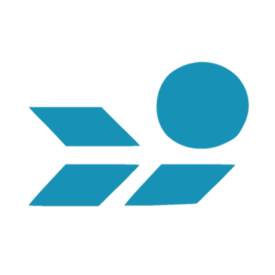

About Us
Krafsidon is a Greek Software Company created at 2021 by Junior-High School students. Our passion for Open Source Software and to introduce new people to Linux, made us found Krafsidon, in order to m ake your experience with Linux even better.
Our Products
